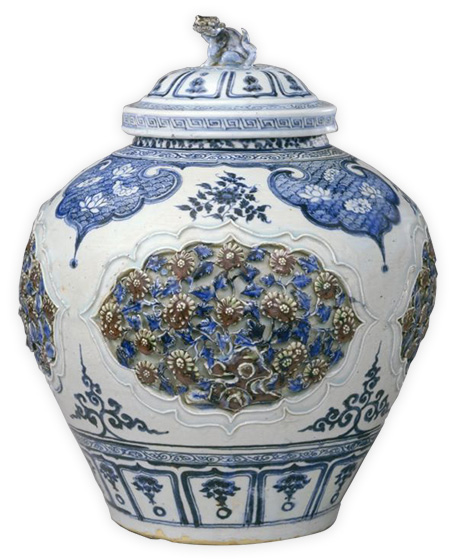
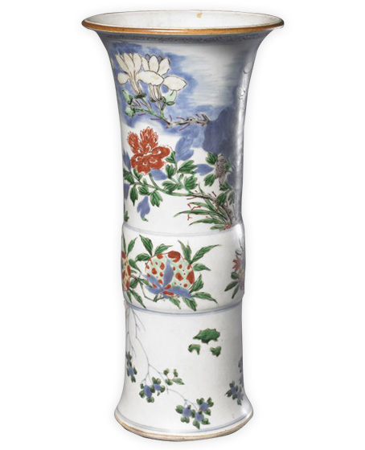

Porcelain History
The history of Chinese porcelain can be traced back to the Neolithic period 7,000 years ago.
After a long development and the baptism of history, it has become a cultural treasure of China.
Here are some important periods in the development of Chinese porcelain:
Neolithic pottery(c. 8000 BC - 2000 BC)
Pottery was created with the emergence of primitive agriculture and the need for settled human life. Archaeological evidence shows that pottery production in China has a history of more than 10,000 years, and pottery was the main daily production and life tool for primitive ancestors.
Pottery from the Neolithic Age in China is widely distributed, with a large number of physical materials unearthed in various regions of the north and south. Its main distribution areas include the Yellow River basin, the Yangtze River basin, the southeastern coastal areas, and northern regions. The Yellow River and the upper and middle reaches of the Yangtze River are famous for painted pottery, while the lower reaches of the Yangtze River are known for exquisite white and black pottery. The southeastern coastal areas are represented by stamped hard pottery, while the northern regions are known for pottery with unique ethnic characteristics. Pottery from each region has its unique characteristics but there are also inherent connections between them.
Ceramics of Shang, Zhou, Qin and Han(circa 1600 BC - 220 AD)
During the Shang and Zhou Dynasties, pottery remained the main daily life tool for people. In addition to a large number of gray pottery, the Shang Dynasty also produced exquisite engraved white pottery and stamped hard pottery. Primitive porcelain appeared around the mid-Shang Dynasty, laying the foundation for the invention of porcelain in the future.
During the Warring States period, ceramic production became more specialized, and stamped hard pottery and primitive porcelain achieved widespread development in the south. The Terracotta Army of Emperor Qin Shi Huang fully reflects the Qin Dynasty's advanced pottery-making level and superb sculpture art. During the Western Han Dynasty, low-temperature lead-glazed pottery was invented in the north, laying the technical foundation for the development of low-temperature glazed ceramics in the future. In the Eastern Han Dynasty, true porcelain was successfully fired, which was a major invention in the history of ceramics development and also one of the outstanding contributions of the Chinese nation to human civilization.
Ceramics of the Three Kingdoms, the Two Jin Dynasties, and the Northern and Southern Dynasties(220-589 AD)
During the Three Kingdoms, the Jin Dynasty, and the Northern and Southern Dynasties, which lasted for more than 360 years, ceramic production developed rapidly. Ceramic-making techniques in the south significantly improved, and the scale and production areas of porcelain continued to expand. Kiln sites were distributed in provinces such as Jiangsu, Zhejiang, Fujian, Jiangxi, Hunan, Hubei, and Sichuan. The main type of porcelain produced was celadon, and the common shapes of ceramic objects were plates, bowls, pots, jars, cages, wash basins, granaries, candlesticks, tiger-shaped vessels, spittoons, and incense burners. The products had unique local characteristics.
The white porcelain excavated from the tomb of Fan Cui of the Northern Qi Dynasty in Anyang City, Henan Province, is currently known as the earliest white porcelain, laying the foundation for the development of white porcelain in the Sui and Tang Dynasties.
Ceramics of the Sui, Tang and Five Dynasties(581-960 AD)
Ceramic production in the Sui dynasty carried on from the beginning. By the Tang Dynasty, the ceramic industry was flourishing. Tang Dynasty ceramics can be called a pearl in the history of China's ceramic development, famous kilns all over the north and south, the shape of the object in a variety of forms, decorative patterns are rich and beautiful. The popularity of the tea custom, further stimulating the development of the porcelain industry. Chinese and foreign economic and cultural exchanges and development, but also make ceramics as a material carrier to become a messenger of friendship.
Five Dynasties ceramics more emphasis on modeling and decorative techniques, for the emergence of the peak of the Song Dynasty ceramics laid the foundation for the process.
Ceramics of Song, Liao, Jin, and Western Xia (916-1279 AD)
Song Dynasty ceramics industry flourished, the famous kilns throughout the country, there is an unprecedented flourishing situation in the history of ceramics. On the basis of the development of private kilns, the court also set up kilns in the north and south of the country specifically for the firing of porcelain for the court, called "official kilns". Ru, official, brother, Ding, Jun kilns and other "five famous kilns" porcelain highly esteemed by future generations.
The northern region of Liao, Jin, Western Xia ceramics, both by the Central Plains ceramic technology, but also unique national style, the history of Chinese ceramics in the national fusion of a strange bar.
During the Song and Jin dynasties, a number of porcelain kiln systems with similar techniques and decorative styles were formed in the north and south, such as the Ding kiln system, Yaozhou kiln system, Magzhou kiln system and Jun kiln system in the north; the Yue kiln system, Longquan kiln system, Jian kiln system and Jingdezhen kiln system in the south.
Ceramics of the Yuan Dynasty (1271-1368 AD)
In 1279 A.D., the Yuan Dynasty unified China. The flourishing of overseas trade further stimulated the flourishing of the ceramic industry. Jun kilns, magnetic state kilns, Longquan kilns, etc. continued to produce traditional ceramic varieties, and their products not only sold well at home, but also sold abroad. Jingdezhen is the timing, location, and people, the rise of a new army, blue and white glaze, glaze, blue glaze, red glaze porcelain and other new varieties, so Jingdezhen has become the country's most important porcelain production area, for the Ming and Qing dynasties to further become the country's porcelain center laid the foundation.
Ming dynasty Jingdezhen official kiln and other local kiln ceramics (1368-1644 AD)
Ming Dynasty since the second year of Hongwu (1369), the imperial court that was set up in Jingdezhen Imperial Ware Factory specializing in firing porcelain for the court, which is commonly known as "official kiln porcelain". Since then, successive dynasties followed this system. The kiln industry in the Ming Dynasty is divided into two kinds of official kilns and private kilns. The former specializes in burning porcelain for the palace, regardless of cost, exquisite quality; the latter is a commodity production, large production, artistic style, simple and elegant. The development of the official kilns led to the flourishing of the private kilns, Jingdezhen was engaged in ceramic production of more than 100,000 workers, the world's most sophisticated and beautiful porcelain is not out of Jingdezhen, Jingdezhen has become the national porcelain center. Blue and white porcelain, colored porcelain and color glaze porcelain are its main varieties, and there are fine products in successive dynasties.
The white porcelain of Dehua kiln in the Ming Dynasty is unique, especially the porcelain carving has long been known. Yixing kiln in Jiangsu and Guangdong Shiwan kiln burned imitation Jun glaze pottery, Yixing kiln also burned purple sand pottery, especially famous for purple sand tea set, there are many masters of design and production of purple sand tea set.
Jingdezhen kiln porcelain from the late Ming and early Qing dynasties (circa 1607-1700 AD)
During the nearly 100 years from the 35th year of the Wanli reign of the Ming Dynasty (1607) to the middle of the Kangxi reign of the Qing Dynasty (c. 1676-1700), Chinese society underwent dramatic changes as peasant revolts flourished until the destruction of the Ming Dynasty and the entry of the Qing Dynasty into the Central Plains. As the national center of porcelain production, Jingdezhen also experienced a major shift in its porcelain manufacturing industry. The main manifestation of the porcelain industry in Jingdezhen was dominated by the official kilns before the 35th year of the Wanli era, after which the official kilns declined sharply, and the private porcelain industry was stimulated by domestic and Asian and European market demand and gradually flourished, leaping to a dominant position. In the past, people have referred to this period of the 17th century porcelain industry in Jingdezhen as the "transformation period" or "transition period.
Kangxi, Yongzheng, Qianlong Jingdezhen official kilns of the Qing Dynasty in the Qing Dynasty (1662-1795 AD)
During the Qing Dynasty, Jingdezhen kilns followed the Ming system and were also divided into government and private kilns. The rulers of the Qing dynasty removed some of the drawbacks of the Ming dynasty in the handicraft industry, abolished the system of government kilns, and made the "official hitching and firing" of the late Ming dynasty as a custom, thus creating a situation of competition between the government and the people and stimulating the further development of the private kilns.
Kang, Yong, Qian three dynasties is the heyday of ceramic production in the Qing dynasty, due to the three emperors are interested in porcelain production, coupled with the Taoist Zang should be selected, Lang Tingji (1663-1715), Nian Xiyao (? -(1738), Tang Ying (1682-1756), and so on to the imperial kiln factory painstakingly to operate, so that the imperial kiln factory in Jingdezhen on the basis of imitation of ancient, creating a large number of new varieties of firing. In the thirteenth year of the Yongzheng era, Tang Ying wrote "Tao Cheng Ji Zhi", listing as many as 57 varieties of antique imitation and innovation at that time. Dehua kiln, Shiwan kiln and Yixing kiln also followed the tradition of the Ming Dynasty and developed healthily according to their own unique styles.
Late Qing dynasty porcelain (circa 1821—1911)
After the Opium War in 1840, the porcelain industry in Jingdezhen generally showed a gradual decline as internal and external troubles followed and the Qing dynasty became increasingly decayed. But the late Qing dynasty official kiln porcelain still has a bright spot, such as the emperor's wedding and the empress dowager birthday celebration with sets of mass production of tableware, such as the afterglow of the evening sun, is enviable.
Under the influence of the foreign affairs movement, Xiong Xiling in 1906 in Hunan Liling Jiangwan initiative "Hunan porcelain company", while the establishment of "Hunan porcelain school", hired Jingdezhen and Japan famous technicians as lecturers, training a number of technical personnel. And the introduction of foreign advanced equipment, the production of white underglaze porcelain. This is the goblet of modern underglaze porcelain in China. Liling porcelain has since become famous all over the world and is known as the second porcelain capital of China.